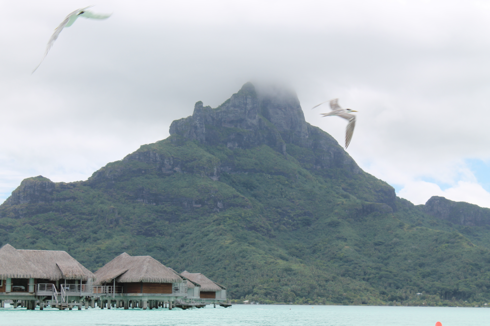
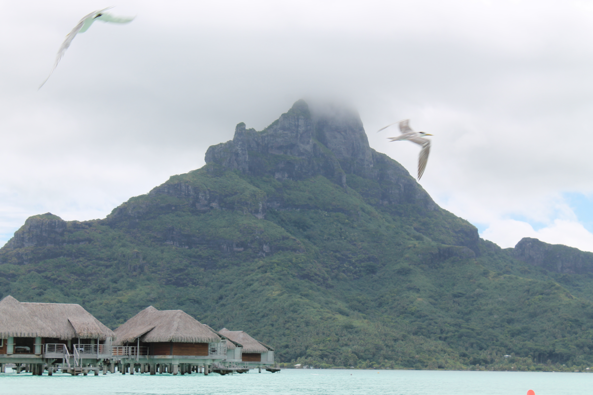

In February 2015, my husband and I began our adventure to the French Polynesian Islands! We were en route to Bora Bora, to the Intercontinental Resort and Thalasso Spa. When we arrived in Tahiti, we had to take a small plane over to the Bora Bora airport. I have seen some small airports but this one was unlike any other. From there, we had to take a sea charter over to our hotel destination in Bora Bora. You see, pretty much every resort in Bora Bora has it's own island off of the mainland of Bora Bora. By the time we arrived, we had been traveling from St. Louis for almost 30 hours!
We were blown away when we saw our accomodations for the next 4 days!

 
Adventures in Bora Bora
Mostly we relaxed and took advantage of the beauty and hung out in overwater bungalow. You could see the sea and the creatures that called it home through the glass bottom floor which was so neat. We did get a chance to swim with the stingrays, and we took a cruise around the islands to see some of local wildlife and sea life. We also took a trip over to the mainland of Bora Bora, which was a stark difference as to what you would see on the islands of the different resorts. One of our biggest accidental daring trips was when we took a walk on the outskirts of the island we were staying on and got chased by wild dogs. As we were running back, we noticed the sign on the ground "Beware of wild dogs." Yikes! Everything was beautiful, but a special memory is getting up one morning before sunrise to see the sun rise above us and all of that beautiful country.
Fun times...


Culture of Bora Bora
Unfortunately I did not get many pictures when we traveled over to the mainland of Bora Bora - but we got a better feel for the rich culture of the French Polynesian people. In fact, we were blown away at the contrast between our pristine resort and the little village feel of the mainland. It was night and day. We got to see and experience the small businesses and meet some of the locals. Saw a local school and got a feel for the differences in eduacation. The true heart of a place has always intrigued me, and my only regret of this trip was that we didn't get to rent a car as we had planned to explore the "real" Bora Bora. There was bad weather the day we took our boat over to the main land. Click the link below to learn more about some of the Tahitian and French Polynesian culture.
The culture of Bora Bora and French Polynesia